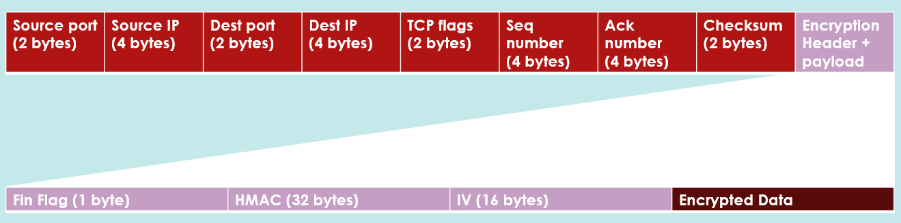

Reliable Transport over UDP
The protocol builds a simplified TCP-like transport layer on top of UDP to achieve reliable data transfer.
It uses a byte-oriented sequence number system and a fixed-size sliding window to control flow and limit the number of outstanding
packets. Reliability is achieved through acknowledgment-based delivery, fast retransmission triggered by three duplicate ACKs, and
timeout-based retransmission for lost packets. These mechanisms allow the protocol to tolerate packet loss, reordering, and
duplication while maintaining correct file reconstruction.
A modified three-way handshake establishes the connection. The server creates a half-open connection upon receiving
a SYN packet from the client and responds with a SYN+ACK. The connection is fully established only after the client sends its next packet,
mirroring TCP's connection semantics while allowing additional data to be exchanged during setup.
Custom Packet Format
The protocol defines a custom TCP-style header that includes source and destination IP addresses, ports, control flags,
sequence and acknowledgment numbers, and a checksum for error detection. Sequence numbers are byte-based and offset to account for handshake
packets. A checksum is computed over the entire packet to detect transmission errors caused by bit corruption.
Header Format

Secure Key Exchange
Session keys are derived using a pre-shared key and two nonces exchanged during the handshake. The client generates a nonce
and sends it with the initial SYN packet, and the server responds with its own nonce. Both parties independently derive identical session keys
without ever transmitting them over the network. This design ensures that encryption and integrity keys remain confidential even if packets are
intercepted.
The derived session keys include a 128-bit encryption key for data confidentiality and a 256-bit HMAC key for integrity
verification.
Confidentiality
All file data is encrypted on a per-packet basis using AES-128 in CBC mode. Each packet includes a fresh initialization vector (IV),
which is transmitted alongside the encrypted payload. This prevents pattern leakage across packets and ensures semantic security for the transferred
data.
Integrity and Authentication
Data integrity is enforced using an HMAC computed over the IV and encrypted payload. The receiver recomputes the HMAC
and verifies it before accepting any packet data, ensuring that tampering or corruption is detected immediately.
Authentication is integrated into the handshake using the pre-shared key and exchanged nonces. Both client and server
verify each other's authenticity before transitioning to an established connection state, preventing unauthorized peers from participating in
the file transfer.